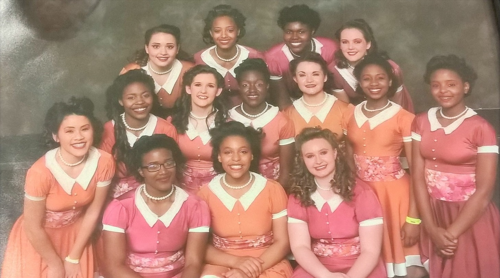
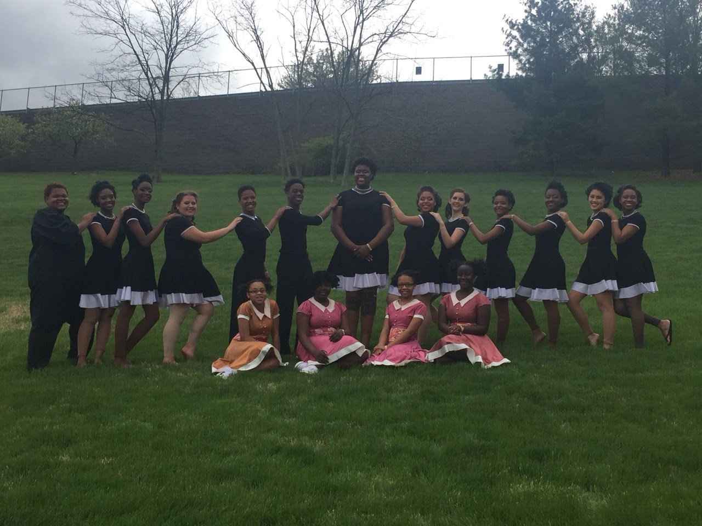
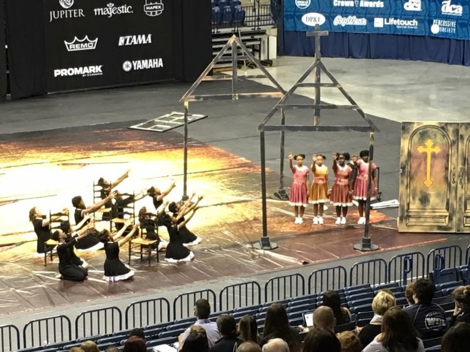
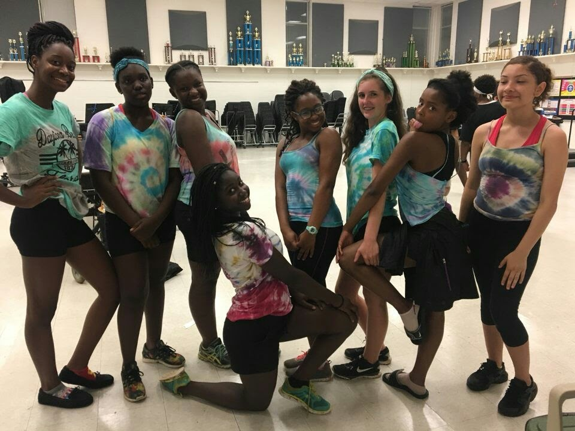
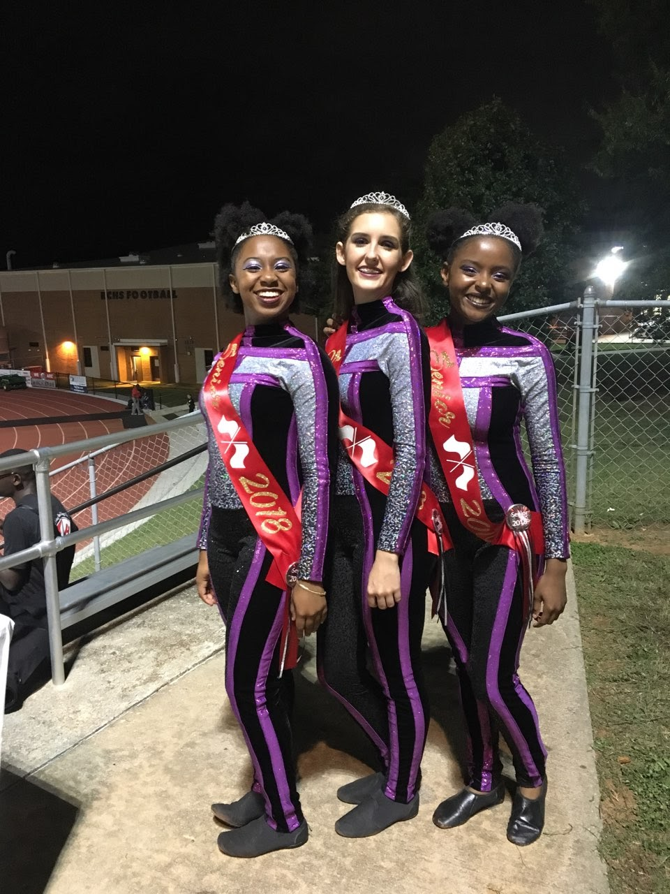
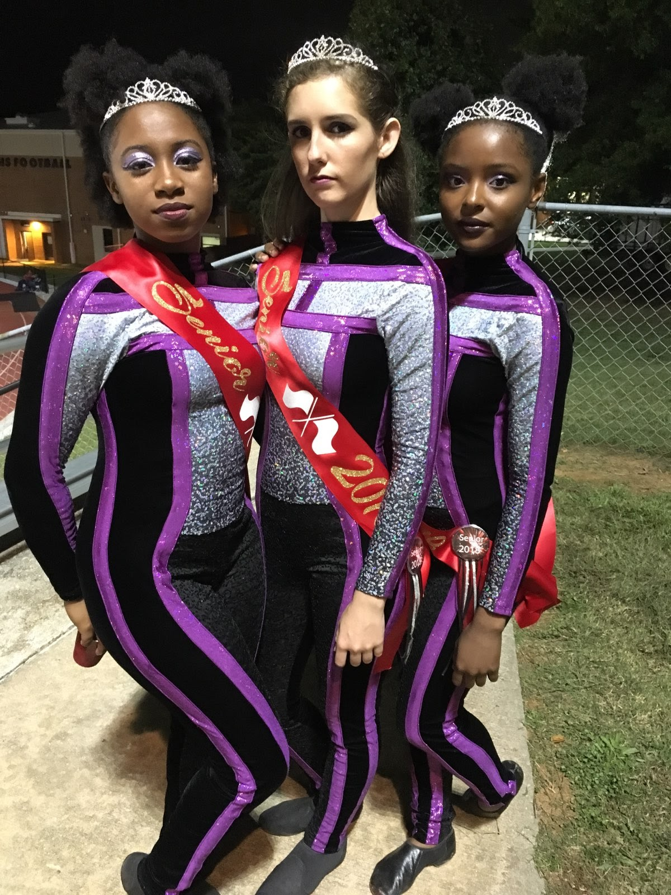

Fig. 1 - Color guard group and uniform during my senior year of high school (I am in the middle).
is formally known as the visual representation for the marching band.
Members of the guard use equipment - sabres, rifles, flags and other props - to add color, effects, drama and emotion to the music played by the band.
By throwing and catching equipment, color guard is something that is also judged during competition.
The color guard world is very competitive which is why there is also a winter season where guards perform against other guards.
During winter guard, guards perform with compiled and edited songs instead of music from the marching band.
In order to be one of the best, it is important that each show is comprised of exciting themes, multiple tricks and surprises to excite the judges and audience.
Throughout this website, I would like to take you on the journey of my experience in color guard.
Each section will have a different element of guard that I experienced.
Fig. 2 - Me holding our first place trophy after our first competition.

Fig. 3 - Winter guard group my freshman year. The show was about the Freedom Riders: the civil rights activists who rode buses into the integrated South to challenge segregation laws.
General Marching Band Schedule
Monday - Wednesday
Thursday
Friday
Saturday(1)
Homework Time
3:30pm - 4:45pm
3:30pm - 5:45pm
No time allocated
No time allocated
Warm-Up/Practice
5:00pm - 7:00pm
6:00pm - 9:00pm
Football Game Performance(2)
Morning Practices depending on competition
Clean-up(3)
7:15pm - 8:15pm
9:15 - 10:15pm
No time allocated
No time allocated
Saturdays are competition days.
Usually Saturday practices would be early in the morning.
After practicing we loaded our equipment on to a truck, did makeup and loaded the buses. Guard always has the most to do in preparation for a competition, because we have to do makeup and have all of our equipment togther.
Fridays are football games so the marching band and guard perform during halftime.
We don't have a full practice because we have to get prepared for the game after school, but we would practice for about 30 minutes before we performed.
Believe it or not, clean-up usually took an hour max. Everyone had to take everything from the practice field up to the band room (which was a long walk up a hill). We then had to put all of our equipment up, clean the bandroom, and listen to any closing remarks from our band director, drum majors and/or captains before we were dismissed.
General Winter Guard Schedule
Tuesday
Thursday
Friday(1)
Saturday(2)
Homework Time
3:30pm - 4:45pm
3:30pm - 5:45pm
3:30 - 5:45pm
No time allocated
Warm-Up/Practice
5:00pm - 7:00pm
6:00pm - 9:00pm
6:00pm - 9:00pm
Morning Practices depending on competition(3)
Clean-up
7:15pm - 8:15pm
9:15 - 10:15pm
9:15pm - 10:15pm
Whenever we get back from Competitions
Because football season is over by time winter guard comes, guard will have long practices on Friday as well.
Competition days are much different from those with marching band. Guard only has to worry about their equipement and there is also less people traveling to and from competitions.
Usually we would wait until we got to the competition site before practicing.
That way we could do our makeup and get ready to perform after we practiced.
Sophomore Year

Fig. 4 - This was my favorite year of doing winter guard because of this group and our show. With this show we competed at nationals in Dayton, Ohio and gained 25th in the nation for our class.

Fig. 5 - Our show was based on the Burmingham, Alabama church bombing that killed four young girls.
I have included a link to the performance of this show. Enjoy!
Fig. 6 - This is the year that I (far left) became one of the guard captains. I remained captain for 2 years.

Fig. 7 - Each day at practice we had specific clothing we had to wear. This particular day was black shorts with tye-dye shirts that we made.
Fun fact (but not really fun): Every semester of color guard cost about $700 - $800!! I did color guard for four years, which is 8 semesters.
Senior Year

Fig. 8 - These are two of the ladies that I graduated with. I am on the left in both pictures.

Fig. 9 - We were the only seniors in guard that year.
Overall, color guard was great and I am glad I got to experience something like it. I hope you have learned a lot from my website about my experience in Color Guard. I have provided a link to more information if you are interested. :)